1과목: 수산물품질관리 관련법령
1. 친환경농어업 육성 및 유기식품 등의 관리ㆍ지원에 관한 법령상 유기식품등의 인증에 관한 내용으로 옳은 것은?
2. 친환경농어업 육성 및 유기식품 등의 관리ㆍ지원에 관한 법령상 인증심사원의 자격에 관한 설명으로 옳지 않은 것은?
3. 친환경농어업 육성 및 유기식품 등의 관리ㆍ지원에 관한 법률의 목적에 관한 내용이다. ( )에 들어갈 내용을 순서대로 옳게 나열한 것은?
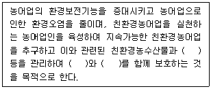
4. 농수산물의 원산지 표시 등에 관한 법률상 벌칙 및 과태료에 관한 내용이다. ( )에 들어갈 내용을 순서대로 옳게 나열한 것은? (단, 가중이나 감경사유는 고려하지 않음)
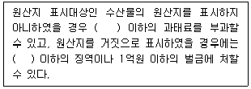
5. 농수산물의 원산지 표시 등에 관한 법령상 원산지의 표시기준에 따른 설명으로 옳지 않은 것은?
6. 농수산물의 원산지 표시 등에 관한 법률상 원산지 표시 등의 위반에 대한 처분 및 교육에 관한 내용으로 옳지 않은 것은?
7. 농수산물의 원산지 표시 등에 관한 법령상 식품접객업(일반음식점)에서 냉동 수산물을 조리하여 판매ㆍ제공하는 경우 원산지 표시 대상으로 모두 옳은 것은?
8. 농수산물의 원산지 표시 등에 관한 법률상 원산지 표시 등의 조사에 관한 설명으로 옳지 않은 것은?
9. 수산물 유통의 관리 및 지원에 관한 법률상 수산물 저온유통체계 등의 구축을 위하여 해양수산부장관이 수립ㆍ시행하여야 하는 시책에 포함되는 사항으로 옳지 않은 것은?
10. 농수산물 유통 및 가격안정에 관한 법령상 도매시장거래 분쟁조정위원회의 구성 등에 관한 설명으로 옳은 것은?
11. 수산물 유통의 관리 및 지원에 관한 법률상 수산물의 생산자와 거래관계자의 편익과 소비자 보호를 위하여 위판장개설자가 이행하여야 할 사항으로 옳지 않은 것은?
12. 수산물 유통의 관리 및 지원에 관한 법령상 해양수산부장관이 기본계획 및 연도별시행계획 등을 효율적으로 수립ㆍ추진하기 위하여 수산물 생산 및 유통산업에 대한 실태조사를 실시하는 경우 그 범위로 옳지 않은 것은?
13. 농수산물 유통 및 가격안정에 관한 법률상 민영도매시장의 중도매인을 지정하는 자는?
14. 농수산물 유통 및 가격안정에 관한 법률상 경매 또는 입찰의 방법에 관한 내용이다. ( )어갈 내용을 순서대로 옳게 나열한 것은?
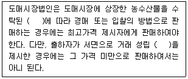
15. 농수산물 유통 및 가격안정에 관한 법령상 농수산물도매시장의 수산부류 거래품목이 아닌 것은?
16. 물 유통 및 가격안정에 관한 법령상 유통조절명령에 포함되어야 할 사항으로 옳지 않은 것은?
17. 농수산물 품질관리법상 농수산물의 안전성조사 등에 관한 설명으로 옳지 않은 것은?
18. 농수산물 품질관리법상 수산물품질관리사가 수행할 수 있는 직무로 옳은 것은?
19. 농수산물 품질관리법상 수산물 및 수산가공품의 검사대상 중 검사의 일부를 생략할 수 있는 것은?
20. 농수산물 품질관리법령상 지리적표시에 관한 설명으로 옳은 것은?
21. 농수산물 품질관리법상 위생관리기준에 관한 설명이다. ( )에 들어갈 내용을 순서대로 옳게 나열한 것은?
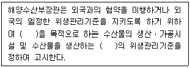
22. 농수산물 품질관리법상 수산물 품질인증기관의 지정 취소사유로 옳지 않은 것은? (단, 위반횟수는 1회이며, 가중이나 감경사유는 고려하지 않음)
23. 농수산물 품질관리법상 수산물검사관이 수산가공품에 검사 결과를 표시하여야 하는 경우를 모두 고른 것은?
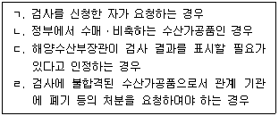
24. 농수산물 품질관리법상 '지리적표시' 용어의 정의이다. ( )에 들어갈 내용을 순서대로 옳게 나열한 것은?
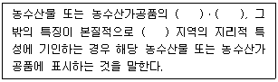
25. 농수산물 품질관리법령상 수산물의 품질인증에 관한 설명으로 옳은 것은?
2과목: 수산물유통론
26. A영어조합법인은 최근 물류센터를 건립하여 소매점 사업을 진행하고 있다. 이때 해당하는 경영전략의 유형은?
27. 수산물 가격 및 수급안정정책에 해당하는 것을 모두 고른 것은?
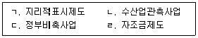
28. 수산물 마케팅 믹스에 해당하지 않는 것은?
29. 기업의 브랜드 자산을 결정짓는 요소에 해당하지 않는 것은?
30. 수입산 연어의 유통단계별 가격은 다음과 같다. 도매업자의 유통마진율(%)은?
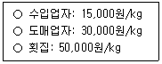
31. 백화점에서 다음과 같은 광고를 하고 있다. 구매력 있는 소비자들을 대상으로 하는 초기 고가전략은?
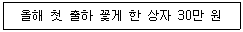
32. 대고객 커뮤니케이션 채널로서 소비자가 최종 구매 의사결정을 매장 내에서 결정하는 비율이 높게 나타나는 광고는?
33. 수산물 가격 변동에 관한 설명으로 옳지 않은 것은?
34. 수산물 산지 유통단계에서 중도매인이 부담하는 비용이 아닌 것은?
35. 수산물의 수요 및 공급 이론에 관한 설명으로 옳은 것은?
36. 수산물 공동판매의 목적이 아닌 것은?
37. 수산물 수요의 가격탄력성에 관한 설명으로 옳은 것은?
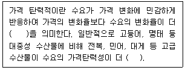
38. 수산물 전자상거래에 관한 설명으로 옳지 않은 것은?
39. 기업과 소비자간 수산물 전자상거래에 관한 설명으로 옳은 것은?
40. 냉동수산물의 유통에 관한 설명으로 옳지 않은 것은?
41. 국내산 고등어의 생산 및 유통에 관한 설명으로 옳은 것은?
42. 수산가공품 유통에 관한 설명으로 옳은 것을 모두 고른 것은?
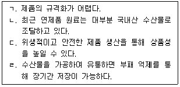
43. 국내 양식산 활어 유통에 관한 설명으로 옳지 않은 것은?
44. 수산물의 물적 유통활동에 해당하는 것을 모두 고른 것은?
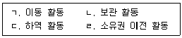
45. 수산물 소비지 도매시장에 관한 설명으로 옳지 않은 것은?
46. 우리나라 수산물 유통의 현황에 관한 설명으로 옳지 않은 것은?
47. 수산물의 상적 유통기능이 아닌 것은?
48. 다음에서 계통출하에 해당하는 것을 모두 고른 것은?
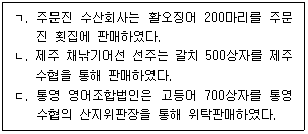
49. 농수산물 유통 및 가격안정에 관한 법률상 매매참가인의 정의이다. ( )에 들어갈 내용을 순서대로 옳게 나열한 것은?
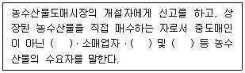
50. 수산물 유통의 특성으로 옳지 않은 것은?
3과목: 수확후 품질관리론
51. 황색포도상구균(Staphylococcus aureus) 식중독에 관한 설명으로 옳은 것은?
52. 수산물의 가공 처리 목적에 해당하지 않는 것은?
53. HACCP 7원칙 중 중점관리점의 한계기준 설정에서 현장 확인지표로 옳지 않은 것은?
54. HACCP 적용에서 식중독균, 농약, 중금속, 이물 등을 확인하는 단계는?
55. 세균성 식중독에 해당되지 않는 것은?
56. 어획물의 선상처리 시 상자담기에 적절한 방법이 아닌 것은?
57. 통조림 식품의 밀봉부 검사 항목에 해당하지 않는 것은?
58. 연제품의 종류와 가열방법이 바르게 연결된 것은?
59. 수산물의 건조 방법에 관한 설명으로 옳은 것은?
60. 장기 저장이 목적이고 훈제기간이 가장 긴 방법은?
61. 자연 한천의 제조공정이다. ( )에 들어갈 적합한 공정은?
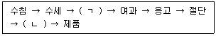
62. 수산가공품 중 자건품에 해당하는 것을 모두 고른 것은?
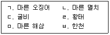
63. 어패류에 함유되어 있는 색소에 관한 설명으로 옳지 않은 것은?
64. 활어 수송을 위한 고려사항에 해당하지 않는 것은?
65. 해조가공품 중 하나인 한천의 원료에 해당하는 것은?
66. 염장품 제조과정 중 염장 초기에 소금의 침투속도가 가장 빠른 것은?
67. 젓갈을 담는 시기에 따라 오젓, 육젓, 추젓으로 불리는 것은?
68. 수산물 표준규격상 수산물의 종류별 등급 및 포장규격에서 규정하고 있는 수산가공품이 아닌 것은?
69. 수산물 표준규격상 수산물의 종류별 등급 및 포장규격에서 다음의 등급규격에 해당하는 것은?
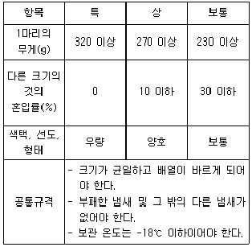
70. 꽁치의 동결 저장 중 최대빙결정생성대인 -5℃에서 동결율(%)은? (단, 꽁치의 수분함량은 80%이고, 어는점은 -0.5℃이다.)
71. 해동에 관한 설명으로 옳지 않은 것은?
72. 어패류의 선도 유지에 관한 설명으로 옳지 않은 것은?
73. 초기 세균 농도가 105 CFU/g인 통조림을 110℃에서 90분간 살균하였더니 102 CFU/g으로 감소하였다. 이 때 D값은?
74. 어류의 처리 형태와 명칭에 관한 설명으로 옳은 것은?
75. 어패류가 부패될 때 발생하는 불쾌한 냄새를 모두 고른 것은?
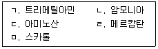
4과목: 수산일반
76. 배타적 경제수역(Exclusive Economic Zone)에 관한 설명으로 옳지 않은 것은?
77. 다음 ( )에 들어갈 내용으로 옳은 것은?
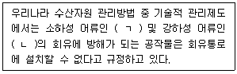
78. 지역수산기구 중 중서부태평양수산위원회(WCPFC)가 주로 관리하는 어종은?
79. 수산업법령상 어업의 종류와 관리제도가 옳게 연결된 것은?
80. 복합양식어업에 관한 설명으로 옳지 않은 것은?
81. 담수 어류인 무지개송어의 생물학적 특징에 관한 설명으로 옳은 것은?
82. 김 양식에 관한 설명으로 옳은 것은?
83. 넙치에 발생하는 기생충성 질병이 아닌 것은?
84. 다음은 알테미아 부화 방법에 관한 설명이다. ( )에 들어갈 내용으로 옳은 것은?
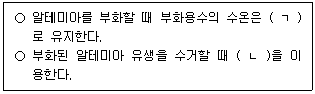
85. 폐쇄적 양식장의 수질관리에서 필요한 공정이 아닌 것은?
86. 수산 양식어업에서 패류 양식 방법이 아닌 것은?
87. 어업 자원의 합리적 관리를 위한 방법으로 옳지 않은 것은?
88. 어로 과정에서 어군의 집어에 관한 설명으로 옳은 것은?
89. 우리나라 연근해에서 멸치를 어획하기 위한 어업을 모두 고른 것은?
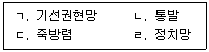
90. 어법과 어구의 연결이 옳지 않은 것은?
91. 성체의 크기가 가장 큰 어류는?
92. 수산자원의 계군 분석 방법이 아닌 것은?
93. 어구 재료의 그물감에 관한 설명으로 옳은 것은?
94. 수산자원의 남획 징후에 관한 설명으로 옳지 않은 것은?
95. 어획관리에 해당하지 않는 것은?
96. 수산자원량을 추정하기 위한 간접조사법이 아닌 것은?
97. 동물플랑크톤에 속하지 않은 것은?
98. 두족류에 관한 설명으로 옳지 않은 것은?
99. 수산업의 특성이 아닌 것은?
100. 수산물에 관한 설명으로 옳지 않은 것은?